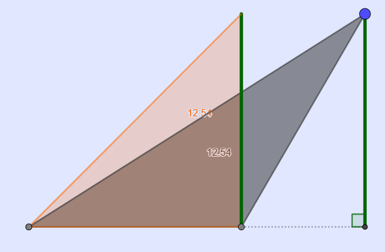
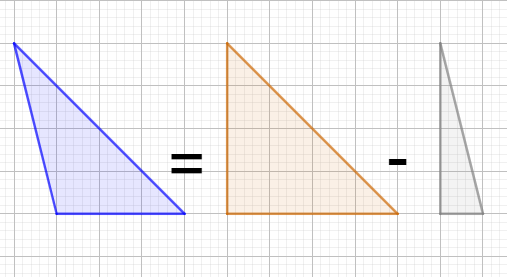

Luas Segitiga Siku-siku: Hanya Setengah Persegi Panjang
Bayangkan sebuah persegi panjang yang dibagi menjadi dua bagian dengan garis diagonal. Setiap bagian adalah segitiga siku-siku! Karena segitiga hanya menempati setengah dari persegi panjang.
Perhatikan gambar di bawah

Luas persegi panjang di atas \(L = p \times l = 3 \times 4\)
Luas segitiga berarti setengah luas persegi panjang, atau
\[ \text{Luas} = \frac{1}{2} \times \text{luas persegi panjang} \]
\[ \text{Luas} = \frac{1}{2} \times \text{alas} \times \text{tinggi} \]
Sehingga
\[ \text{Luas} = \frac{1}{2} \times 3 \times 4 = 6 \ \text{satuan}^2 \]
Mudah, bukan?
Berkenalan dengan Prinsip Cavalieri
Sebenarnya, tanpa disadari, kamu sudah belajar prinsip Cavalieri saat mencoba menghitung luas segitiga yang tidak beraturan. Misalnya, ketika menggeser titik puncak pada segitiga lancip atau tumpul, kamu sedang menggunakan prinsip Cavalieri untuk "mengubah" segitiga menjadi segitiga siku-siku tanpa mengubah luas.
Perhatikan gambar di bawah
Trik menggeser yang kita lakukan di Taman Eksplorasi dan Penemuan didasari prinsip Cavalieri!
Siapa Cavalieri?

Bonaventura Cavalieri adalah seorang matematikawan Italia dari abad ke-17. Ia terkenal karena prinsip Cavalieri, yang digunakan untuk menghitung volume dan luas. Prinsip ini menjadi dasar dari banyak konsep dalam matematika modern, termasuk integral. Dengan memahami prinsip ini, kamu sedang belajar cara berpikir seperti seorang matematikawan hebat!
Cara Kreatif Mencari Luas Segitiga Sebarang
Segitiga sebarang, yang tidak memiliki sudut siku-siku, juga bisa dihitung dengan cara kreatif. Salah satu caranya adalah membagi segitiga tersebut menjadi dua segitiga kecil yang lebih sederhana. Kita dapat menggambar garis tinggi dari salah satu sudut ke sisi yang berlawanan, membentuk dua segitiga siku-siku.
Perhatikan gambar di bawah

Kemungkinan lain juga bisa selesaikan dengan "mengurangi" dua luas segitiga
Setelah membagi segitiga, hitung luas masing-masing segitiga kecil dengan rumus \( \frac{1}{2} \times \text{alas} \times \text{tinggi} \), lalu jumlahkan kedua luas tersebut. Dengan cara ini, segitiga sebarang menjadi lebih mudah dipahami dan dihitung.
Membuat Segitiga di GeoGebra
Kunjungi Web Geogebra dibawah
Geogebra Classic WebKamu bisa mengkontruksi tinggi segitiga di GeoGebra, Ikuti langkah-langkah berikut untuk mencoba:
- Buka GeoGebra dan pilih alat "Poligon".
- Klik di tiga titik pada area kerja untuk membuat tiga sudut segitiga.
- Hubungkan titik-titik tersebut dengan memilih alat "Segitiga" atau "Poligon".
- Untuk menambahkan garis tinggi, pilih alat "Garis Tegak Lurus" dan buat garis dari salah satu sudut ke sisi yang berlawanan.
Berikut video singkat cara membuatnya
GeoGebra akan membantu kamu melihat bentuk segitiga dengan lebih jelas, bahkan menghitung luasnya secara otomatis. Cobalah untuk membuat berbagai jenis segitiga, seperti segitiga siku-siku, lancip, atau tumpul, dan pelajari perbedaannya!